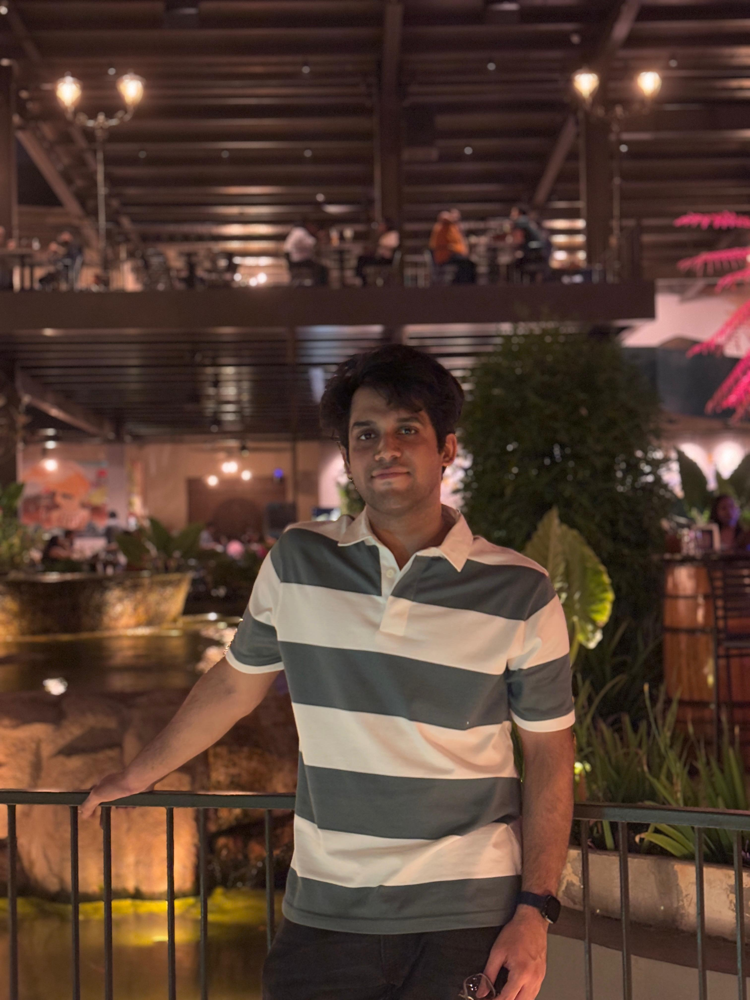
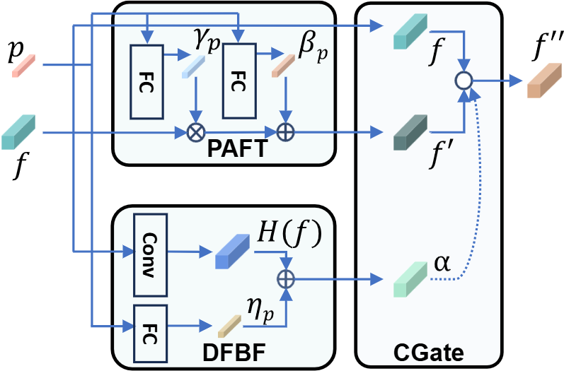
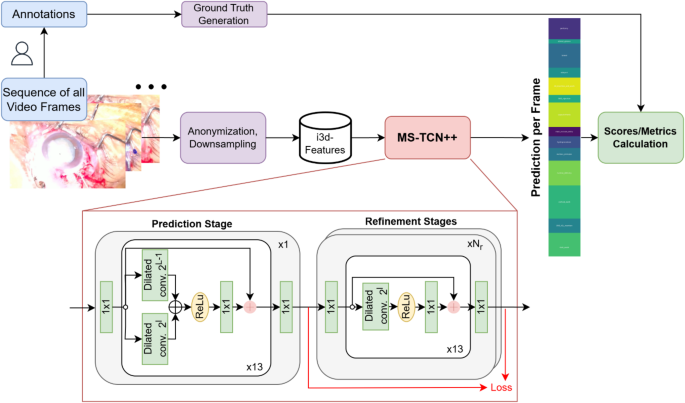
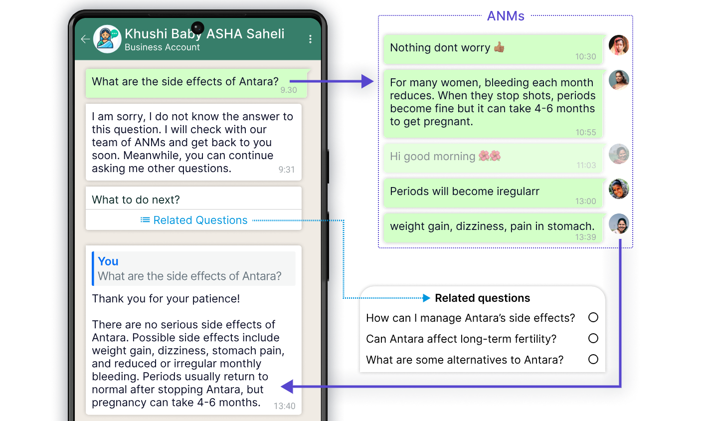

|
Bhuvan Sachdeva I'm a predoctoral research fellow at Sankara Eye Hospital and Microsoft Research, where I have had the pleasure to work with Dr. Mohit Jain, Dr. Vineeth N Balasubramanian, Prof. Thomas Schultz, Dr Kaushik Murali and Dr Maximilian W.M. Wintergerst. My work lies on the intersection of comptuer vision, machine learning and health care. Broadly, I work on developing computer vision based solutions for surgical work analysis for cataract surgery and development for expert-in-the-loop chatbots for patients and healthcare workers. |
 |
{kind=link}
ResearchI'm interested in computer vision, reasoning and applications of AI in healthcare. |
|  |
Phase-Informed Tool Segmentation for Manual Small-Incision Cataract Surgery
Bhuvan Sachdeva*, Naren Akash*, Tajamul Ashraf, Simon Müller, Thomas Schultz, Maximilian W.M. Wintergerst, Niharika Singri Prasad, Kaushik Murali, Mohit Jain MICCAI'25 github / arxiv We present the first comprehensive dataset for MSICS cataract surgery tool segmentation and introduce a novel phase-informed tool segmentation method, ToolSeg, which leverages surgical phases to enhance tool segmentation accuracy. |

|
Learnings from a Large-Scale Deployment of an LLM-Powered Expert-in-the-Loop Healthcare Chatbot
Bhuvan Sachdeva*, Pragnya Ramjee*, Geeta Fulari, Kaushik Murali, Mohit Jain In submission github / arxiv We present findings from a 24-week large-scale deployment of CataractBot involving 318 patients and attendants who sent nearly 2,000 messages. Our analysis revealed that medical questions significantly outnumbered logistical ones, with experts rating 84.52% of medical answers as accurate and negligible hallucinations. As the knowledge base expanded with expert corrections, system performance improved by 19.02%, reducing expert workload. These insights provide valuable guidance for designing future LLM-powered healthcare chatbots. |
|
|
CataractBot: an LLM-powered expert-in-the-loop chatbot for cataract patients
Bhuvan Sachdeva*, Pragnya Ramjee*, Satvik Golechha, Shreyas Kulkarni, Geeta Fulari, Kaushik Murali, Mohit Jain ACM IMWUT/ UbiComp'25 github / project / arxiv We developed CataractBot, an LLM-powered chatbot that answers cataract surgery related questions by querying a curated knowledge base and providing expert-verified responses. The system offers multimodal and multilingual capabilities to address the information gap between patients and healthcare providers. In our deployment study with 49 patients and attendants, 4 doctors, and 2 patient coordinators, CataractBot demonstrated potential in providing reliable, accessible information about cataract surgery. |
|  |
Phase recognition in manual Small-Incision cataract surgery with MS-TCN++ on the novel SICS-105 dataset
Simon Müller, Bhuvan Sachdeva, Singri Niharika Prasad, Raphael Lechtenboehmer, Frank G Holz, Robert P Finger, Kaushik Murali, Mohit Jain, Maximilian WM Wintergerst, Thomas Schultz Nature Scientific Reports This study introduces the first SICS video dataset (SICS-105) and evaluates deep learning-based surgical phase recognition using the MS-TCN++ architecture. We compare performance between SICS and phacoemulsification procedures, showing that while phase recognition achieves 85.56% accuracy for SICS, it performs better on the standard phacoemulsification dataset (89.97%). |
|  |
ASHABot: an LLM-powered chatbot to support the informational needs of community health workers
Pragnya Ramjee, Mehak Chhokar, Bhuvan Sachdeva, Mahendra Meena, Hamid Abdullah, Aditya Vashistha, Ruchit Nagar, Mohit Jain CHI'24 github / project / arxiv In this paper, we introduce ASHABot, an LLM-powered WhatsApp chatbot with experts-in-the-loop designed to support community health workers (CHWs) in India. Our study found that ASHABot provided CHWs with a private channel for asking basic and sensitive questions they hesitated to ask supervisors, while establishing itself as a trusted information source. Supervisors contributed knowledge to the system but expressed concerns about workload and accountability. |
{kind=link}
{kind=link}
{kind=link}
Work Experience |
| Sankara Eye Hospital & Microsoft Research, India | Research Fellow | (August 2023 - Present) | |
| Kroop AI | Research Intern | (Sept 2022 - Mar 2023) | |
| Prime Video, Amazon | Applied Scientist Intern | (May 2022 - July 2022) | |
| Kroop AI | Research Intern | (June 2021 - Apr 2022) |
|
Website adapted from Jon Barron's website. |